9 Nights / 10 Days
Negombo → Anuradhapura → Trincomalee → Habarana → Dambulla → Polonnaruwa → Sigiriya → Kandy → Colombo → Airport
EXPLORE9 NIGHTS / 10 DAYS
Negombo – Anuradhapura – Trincomalee – Habarana – Dambulla – Polonnaruwa – Sigiriya – Kandy – Colombo – Airport
Day 01 – Airport – Negombo
Welcome to Sri Lanka! Upon arrival, we transfer to the nearby coastal town of Negombo. Relax after your flight, explore the golden beaches, or take a walk through the bustling fish market.
Negombo Beach
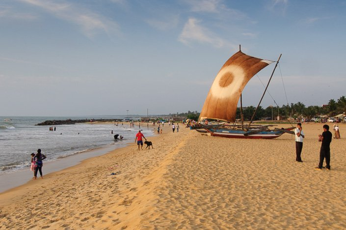
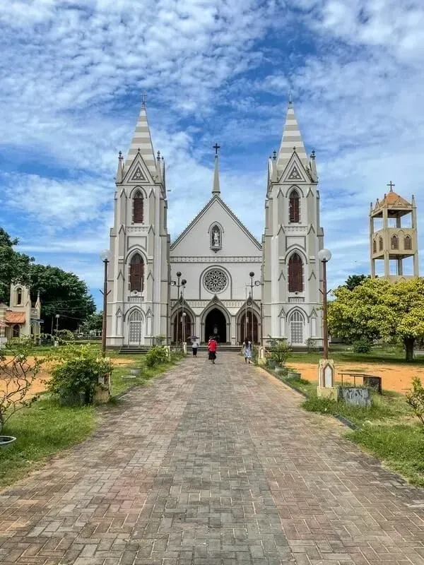


Negombo is a major city in Sri Lanka, situated on the west coast and at the mouth of the Negombo Lagoon. It is known for its long sandy beaches and centuries-old fishing industry.
Day 02 – Anuradhapura
After breakfast, we head to the ancient capital of Anuradhapura, the first kingdom of Sri Lanka, filled with historical and religious significance.
Sacred City Exploration
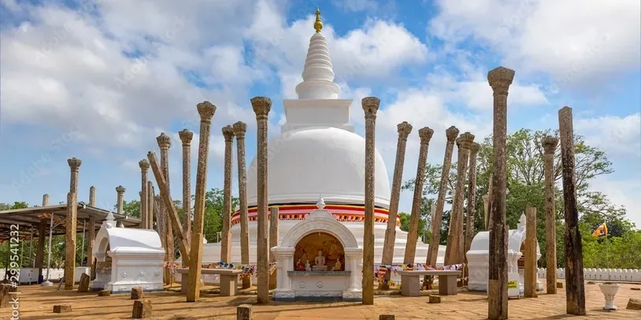
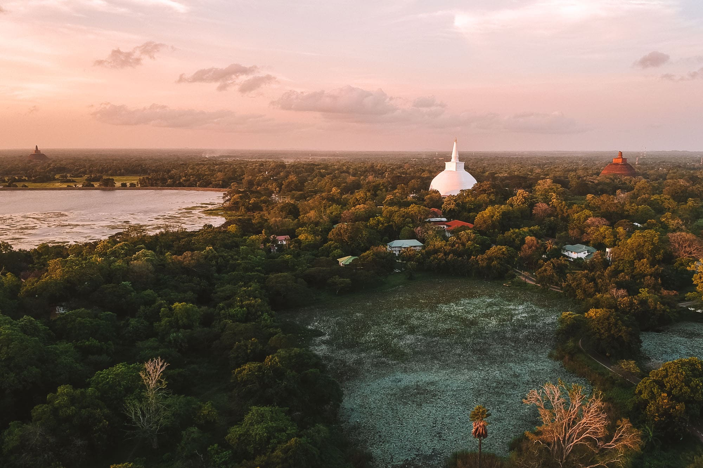
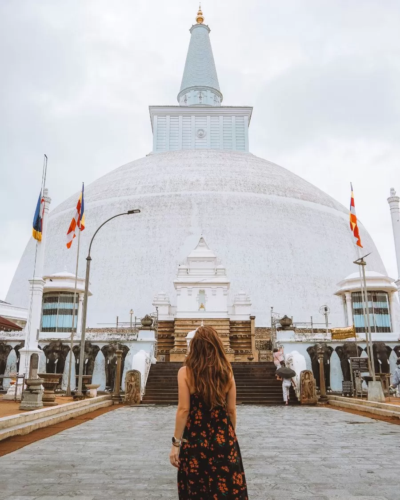
Anuradhapura is the first capital of Sri Lanka located in north central province of Sri Lanka. It is one of the ancient capitals of Sri Lanka which was the center of Theravada Buddhism for many centuries. Due to its ruins of an ancient Sri Lankan civilization UNESCO named it as a UNESCO world heritage site in 1982 under the name of Sacred City of Anuradhapura.
Day 03 – Trincomalee
After breakfast, you will proceed to Trincomalee.
Trincomalee Highlights
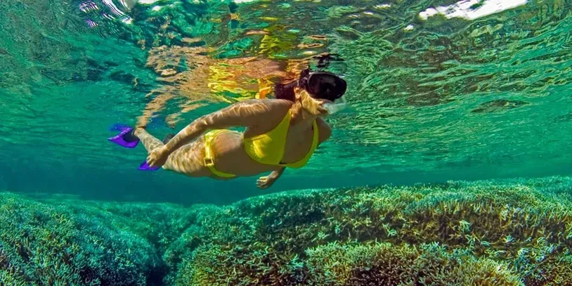
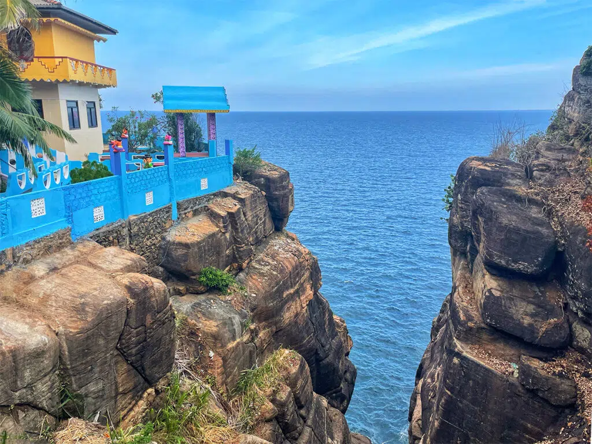
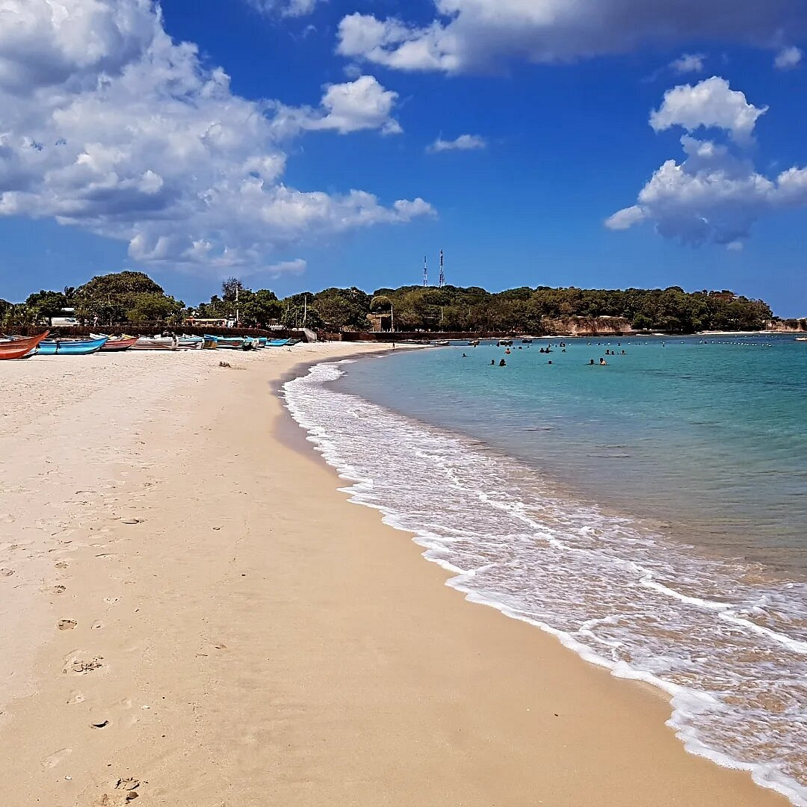
After breakfast, you will proceed to Trincomalee.
Trincomalee (Trinco) sits on one of the world’s finest natural harbors. This historic city is old almost beyond reckoning: it’s possibly the site of historic Gokana in the Mahavamsa (Great Chronicle), and its Shiva temple the site of Trikuta Hill in the Hindu text Vayu Purana. It makes a great stop over on the way to the nearby beaches of Uppuveli and Nilaveli.
Day 04 – Habarana – Dambulla
The next day after breakfast, while driving to Habarana, Dambulla Cave Temple can be shown.
Dambulla Cave Temple


Dambulla Cave Temple also known as the Golden Temple of Dambulla is a World Heritage Site (1991) in Sri Lanka, situated in the central part of the country. This site is situated 148 kilometres (92 mi) east of Colombo, 72 kilometres (45 mi) north of Kandy and 43 km (27 mi) north of Matale.
Dambulla is the largest and best-preserved cave temple complex in Sri Lanka. The rock towers 160 m over the surrounding plains. There are more than 80 documented caves in the surrounding area. Major attractions are spread over five caves, which contain statues and paintings. These paintings and statues are related to Gautama Buddha and his life. There are a total of 153 Buddha statues, three statues of Sri Lankan kings and four statues of gods and goddesses. The latter include Vishnu and the Ganesha. The murals cover an area of 2,100 square metres (23,000 sq ft). Depictions on the walls of the caves include the temptation by the demon Mara, and Buddha's first sermon.
Habarana

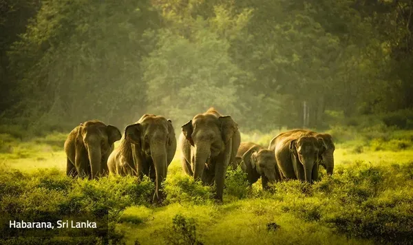


Habarana is a small city in the Anuradhapura District of Sri Lanka. The location has some mid-range and up hotels aimed at package tourists, and is a departure point for other nearby locations of greater interest.
Day 05 – Habarana – Polonnaruwa
The next day after breakfast, while driving to Habarana, Dambulla Cave Temple can be shown.
Polonnaruwa
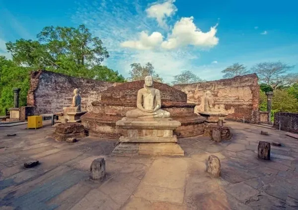
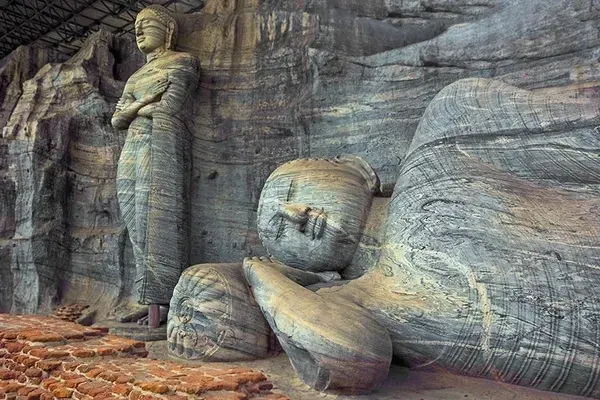
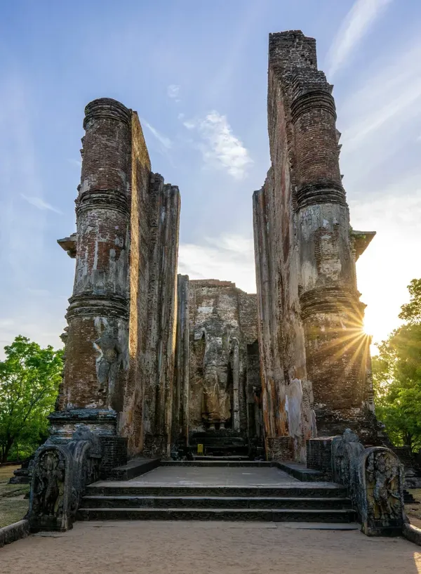
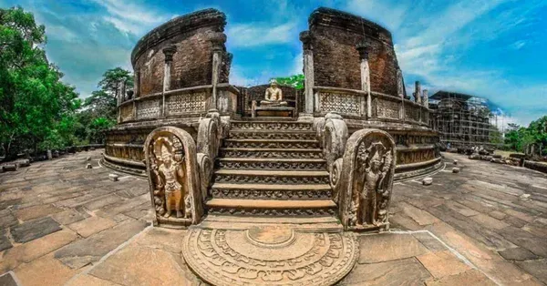
.webp)
Polonnaruwa Kingdom or the Ancient city of Polonnaruwa was the second capital of Sri Lanka for three centuries between the 11th to 13th century after the destruction of Anuradhapura Kingdom in 993. It is located in north central province of Sri Lanka. Due to its archeological prominence and the ancient technological superiority UNESCO declared Polonnaruwa as a World Heritage in 1982 under the name of Ancient City of Polonnaruwa.
Day 06 – Sigiriya – Kandy
The next day after breakfast, You will visit Sigiriya and climb the Rock Fortress. After that, you will proceed to Kandy.
Sigiriya Rock

Sigiriya or Sinhagiri is an ancient rock fortress located in the northern Matale District near the town of Dambulla in the Central Province, Sri Lanka. It is a site of historical and archaeological significance that is dominated by a massive column of rock approximately 180 m (590 ft) high. According to the ancient Sri Lankan chronicle the Cūḷavaṃsa, this area was a large forest, then after storms and landslides, it became a hill and was selected by King Kashyapa (AD 477–495) for his new capital. He built his palace on top of this rock and decorated its sides with colorful frescoes. On a small plateau about halfway up the side of this rock, he built a gateway in the form of an enormous lion. The capital and the royal palace were abandoned after the king's death. It was used as a Buddhist monastery until the 14th century. Sigiriya today is a UNESCO-listed World Heritage Site. It is one of the best-preserved examples of ancient urban planning.
Temple of the Tooth

Kandy is a major city in Sri Lanka located in the Central Province. It was the last capital of the ancient kings' era of Sri Lanka. The city lies in the midst of hills in the Kandy plateau, which crosses an area of tropical plantations, mainly tea. Kandy is both an administrative and religious city and is also the capital of the Central Province. Kandy is the home of the Temple of the Tooth Relic (Sri Dalada Maligawa), one of the most sacred places of worship in the Buddhist world. It was declared a world heritage site by UNESCO in 1988. Historically the local Buddhist rulers resisted Portuguese, Dutch, and British colonial expansion and occupation.
Day 07 – Peradeniya
The next day after breakfast, you will proceed to Peradeniya Botnical Garden.
Peradeniya Botanical Garden


Peradeniya Botanical Garden, the most significant among the three main botanical gardens in Sri Lanka, lies in a spiral of the Mahaweli River and is 6 km west of Kandy. The history of this spectacular botanical garden dates back to the 14th century when Royalty ruled the central highlands of Sri Lanka, and It was the Royal Gardens from 1780 – 1798. At that time, it was used by Kandyan queens for their pleasure. In 1815 British took Kandy under their control, the garden as the Allied Forces Headquarters for the Asian region for a short spell during the Second World War. Then the garden was established in 1821, primarily to introduce coffee trees and various other tropical plants for economic and environmental development. Even after, in 1840, it was transformed into a botanical garden Under the directorship of George Henry Kendrick Thwaites, an eminent British botanist.
Day 08 – Pinnawala – Colombo
The next day after breakfast, while driving to Colombo, Pinnawala Elephant Orphanage can be shown.
Pinnawala Elephant Orphanage

Pinnawala Elephant Orphanage is an orphanage, nursery, and captive breeding ground for wild Asian elephants located at Pinnawala village, 13 km (8.1 mi) northeast of Kegalle town in Sabaragamuwa Province of Sri Lanka. Pinnawala has the largest herd of captive elephants in the world. In 2011, there were 96 elephants, including 43 males and 68 females from 3 generations, living in Pinnawala.
Colombo City

Day 09 – Colombo
The next day after breakfast, proceed to Colombo.
Colombo
Colombo is the executive and judicial capital and largest city of Sri Lanka by population. According to the Brookings Institution, Colombo metropolitan area has a population of 5.6 million, and 752,993 in the Municipality. It is the financial centre of the island and a tourist destination.
Day 10 – Colombo – Airport
Hoping you have enjoyed your trip, you will then be taken to the airport for your upcoming flight.
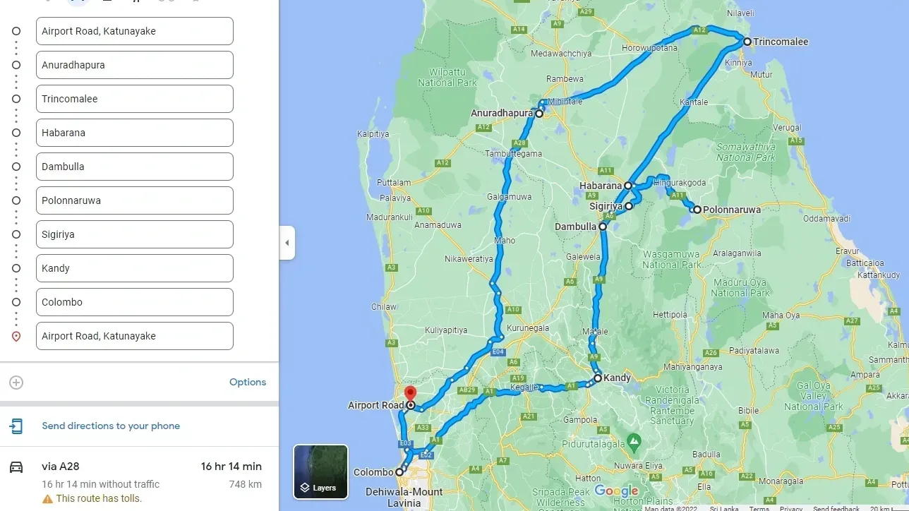
Map of the whole trip